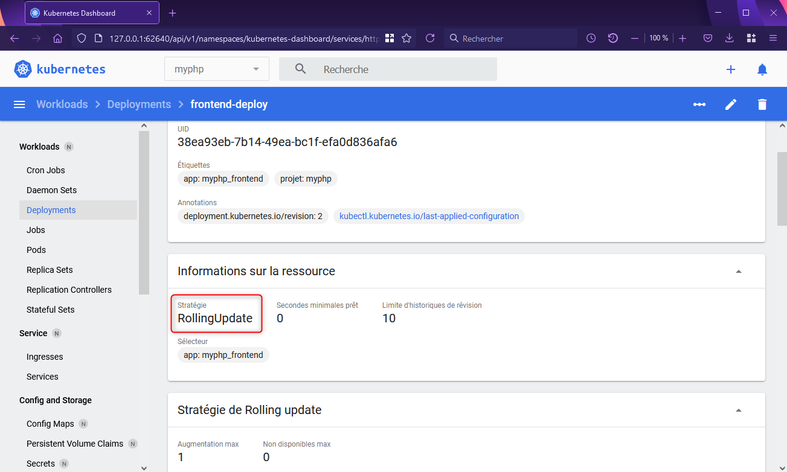
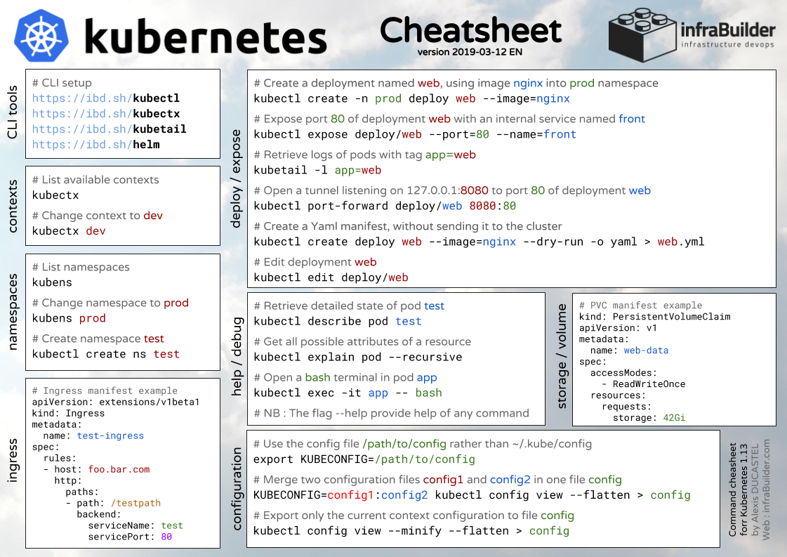

2021-07-16
Pierre SABLE Formateur
Découvrez notre webTV : http://www.dawan.tv
Lien vers le GitLab de Pierre: https://gitlab.com/pierre.sable/poec_devops_kubernetes.git
Kubernetes est un logiciel développé originellement par Google et basé sur une dizaine d’années d’expérience de déploiement d’applications énormes (distribuées) sur des clusters de machines.
Dans la mythologie Cloud Native on raconte que son ancêtre est l’orchestrateur borg utilisé par Google dans les années 2000.
La première version est sortie en 2015 et k8s est devenu depuis l’un des projets open source les plus populaires du monde.
L’écosystème logiciel de Kubernetes s’est développée autour la Cloud Native Computing Foundation qui comprend notamment : Google, CoreOS, Mesosphere, Red Hat, Twitter, Huawei, Intel, Cisco, IBM, Docker, Univa et VMware. Cette fondation vise au pilotage et au financement collaboratif du développement de Kubernetes (un peut comme la Linux Foundation). Trois transformations profondes de l’informatique
Kubernetes se trouve au coeur de trois transformations profondes techniques, humaines et économiques de l’informatique:
Au delà du flou dans l’emploi de ce terme, le cloud est un mouvement de réorganisation technique et économique de l’informatique.
On retourne à la consommation de “temps de calcul” et de services après une “aire du Personnal Computer”.
Pour organiser cela on définit trois niveaux à la fois techniques et économiques de l’informatique: - Software as a Service: location de services à travers internet pour les usagers finaux - Plateforme as a Service: location d’un environnement d’exécution logiciel flexible à destination des développeurs - Infrastructure as a Service: location de resources “matérielles” à la demande pour installer des logiciels sans avoir à maintenir un data center.
La conteneurisation est permise par l’isolation au niveau du noyau du système d’exploitation du serveur : les processus sont isolés dans des namespaces au niveau du noyau.
Cette innovation permet de simuler l’isolation sans ajouter une couche de virtualisation comme pour les machines virtuelles.
Ainsi les conteneurs permettent d’avoir des performances proche d’une application traditionnelle tournant directement sur le système d’exploitation hote et ainsi d’optimiser les ressources.
Les images de conteneurs sont aussi beaucoup plus légers qu’une image de VM
Les technologies de conteneurisation permettent donc de faire des boîtes isolées avec les logiciels pour apporter l’uniformisation du déploiement:
Les conteneurs sont souvent comparés à l’innovation du porte conteneur pour le transport de marchandise.
On peut alors espérer fluidifier la gestion des défis techniques d’un grosse application et atteindre plus ou moins la livraison logicielle continue (CD de CI/CD)
Kubernetes est très versatile et permet d’installer des logiciels traditionnels “monolithiques” (gros backends situés sur une seule machine).
Cependant aux vues des transformations humaines et techniques précédentes, l’organisation de Kubernetes prend vraiment sens pour le développement d’applications microservices:
Les microservices permettent justement le DevOps car:
Nécessaire pour administrer, donner des ordres à un(des) cluster(s) Kubernetes
https://kubernetes.io/fr/docs/tasks/tools/install-kubectl/
On utilise un outils “minikube” pour déployer automatiquement un VM cluster K8S
https://kubernetes.io/fr/docs/tasks/tools/install-minikube/
$ kubectl cluster-infominikube quickly sets up a local Kubernetes cluster on macOS, Linux, and Windows. We proudly focus on helping application developers and new Kubernetes users.
On démarre avec la commande minikube start:
Admin stagiaire@BBG58Y2 MINGW64 ~/Kubernetes
$ minikube.exe start
� minikube v1.22.0 sur Microsoft Windows 10 Pro 10.0.19041 Build 19041
✨ Choix automatique du pilote virtualbox
� Téléchargement de l'image de démarrage de la VM...
> minikube-v1.22.0.iso.sha256: 65 B / 65 B [-------------] 100.00% ? p/s 0s
> minikube-v1.22.0.iso: 46.90 KiB / 242.95 MiB [>___________] 0.02% ? p > minikube-v1.22.0.iso: 94.89 KiB / 242.95 MiB [>___________] 0.04% ? p > minikube-v1.22.0.iso: 174.89 KiB / 242.95 MiB [>__________] 0.07% ? p
...Puis une fois tout installé:
Admin stagiaire@BBG58Y2 MINGW64 ~/Kubernetes
$ minikube start
😄 minikube v1.22.0 sur Microsoft Windows 10 Pro 10.0.19041 Build 19041
✨ Utilisation du pilote virtualbox basé sur le profil existant
👍 Démarrage du noeud de plan de contrôle minikube dans le cluster minikube
🔄 Redémarrage du virtualbox VM existant pour "minikube" ...
🐳 Préparation de Kubernetes v1.21.2 sur Docker 20.10.6...
▪ Génération des certificats et des clés
▪ Démarrage du plan de contrôle ...
▪ Configuration des règles RBAC ...
🔎 Vérification des composants Kubernetes...
▪ Utilisation de l'image gcr.io/k8s-minikube/storage-provisioner:v5
🌟 Modules activés: storage-provisioner, default-storageclass
❗ kubectl.exe est la version 1.18.17, qui peut comporter des incompatibilités avec Kubernetes 1.21.2.
▪ Vous voulez kubectl v1.21.2 ? Essayez 'minikube kubectl -- get pods -A'
🏄 Terminé ! kubectl est maintenant configuré pour utiliser "minikube" cluster et espace de noms "default" par défaut.
On vérifie en recherchant les infos du cluster:
Admin stagiaire@BBG58Y2 MINGW64 ~/Kubernetes
$ kubectl cluster-info
Kubernetes control plane is running at https://192.168.99.100:8443
CoreDNS is running at https://192.168.99.100:8443/api/v1/namespaces/kube-system/services/kube-dns:dns/proxy
To further debug and diagnose cluster problems, use 'kubectl cluster-info dump'.
Dans cet exercice, vous allez créer une spécification pour lancer un premier Pod.
Créez un fichier yaml whoami.yaml définissant un Pod ayant les propriétés suivantes: - nom du Pod: whoami - image du container: containous/whoami - nom du container: whoami
apiVersion: v1
kind: Pod
metadata:
creationTimestamp: null
labels:
run: nginx
name: whoami
spec:
containers:
- image: containous/whoami
name: whoami
resources: {}
dnsPolicy: ClusterFirst
restartPolicy: Always
status: {}Lancez le Pod à l’aide de kubectl
kubectl apply -f whoami.yaml
Listez les Pods lancés et assurez vous que le Pod whoami apparait bien dans cette liste.
$ kubectl get pods
NAME READY STATUS RESTARTS AGE
nginx 1/1 Running 0 37m
whoami 1/1 Running 0 81sObservez les détails du Pod à l’aide de kubectl et retrouvez l’information de l’image utilisée par le container whoami.
$ kubectl describe pod whoami
Name: whoami
Namespace: default
Priority: 0
Node: minikube/192.168.99.100
Start Time: Fri, 16 Jul 2021 15:49:53 +0200
Labels: run=nginx
Annotations: <none>
Status: Running
IP: 172.17.0.4
IPs:
IP: 172.17.0.4
Containers:
whoami:
Container ID: docker://4497f232925a182598ddaddaa724b33729cc6230068a78951616c14b691fcd14
Image: containous/whoami
Image ID: docker-pullable://containous/whoami@sha256:7d6a3c8f91470a23ef380320609ee6e69ac68d20bc804f3a1c6065fb56cfa34e
Port: <none>
Host Port: <none>
State: Running
Started: Fri, 16 Jul 2021 15:50:01 +0200
Ready: True
Restart Count: 0
Environment: <none>
Mounts:
/var/run/secrets/kubernetes.io/serviceaccount from kube-api-access-4p99m (ro)
Conditions:
Type Status
Initialized True
Ready True
ContainersReady True
PodScheduled True
Volumes:
kube-api-access-4p99m:
Type: Projected (a volume that contains injected data from multiple sources)
TokenExpirationSeconds: 3607
ConfigMapName: kube-root-ca.crt
ConfigMapOptional: <nil>
DownwardAPI: true
QoS Class: BestEffort
Node-Selectors: <none>
Tolerations: node.kubernetes.io/not-ready:NoExecute op=Exists for 300s
node.kubernetes.io/unreachable:NoExecute op=Exists for 300s
Events:
Type Reason Age From Message
---- ------ ---- ---- -------
Normal Scheduled 2m3s default-scheduler Successfully assigned default/whoami to minikube
Normal Pulling 2m2s kubelet Pulling image "containous/whoami"
Normal Pulled 115s kubelet Successfully pulled image "containous/whoami" in 7.271245805s
Normal Created 115s kubelet Created container whoami
Normal Started 115s kubelet Started container whoamiAvec la commande kubectl port-forward envoyer une requête à l’application
kubectl port-forward whoami 8080:80
Forwarding from 127.0.0.1:8080 -> 80
Forwarding from [::1]:8080 -> 80
Handling connection for 8080Supprimez le Pod.
$ kubectl delete pod whoami
pod "whoami" deletedDans cet exercice, vous allez créer un namespace dédié et une une spécification pour lancer un Pod avec deux conteneurs.
Créer un fichier de spec “ns_multi.yml” pour le namespace multi à partir d’une commande impérative:
---
kind: Namespace
apiVersion: v1
metadata:
name: multi
labels:
name: multi
...Appliquer le fichier de spec:
$ kubectl apply -f ns_multi.yml
namespace/multi created$ kubectl get namespace
NAME STATUS AGE
default Active 119m
kube-node-lease Active 119m
kube-public Active 119m
kube-system Active 119m
multi Active 18mkubectl create namespace multi --dry-run=client > ns_multi.yamlCréez un fichier yaml multipod.yaml définissant un Pod ayant les propriétés suivantes:
nom du container: nginx
command: [“sleep”, “600”]
---
apiVersion: v1
kind: Pod
metadata:
creationTimestamp: null
labels:
run: nginx
name: mulitpod
namespace: multi
spec:
containers:
- image: nginx:1.18-alpine
name: nginx
- image: debian:buster-slim
name: debian
command: ["sleep", "600"]
...Lancez le Pod à l’aide de kubectl
kubectl apply -f multipod.yamlListez les Pods lancés et assurez vous que le Pod multipod apparait bien dans cette liste.
$ kubectl get pods --namespace=multi
NAME READY STATUS RESTARTS AGE
mulitpod 2/2 Running 0 6s$ kubectl get pods -n multi
NAME READY STATUS RESTARTS AGE
mulitpod 2/2 Running 1 12m$ kubectl get pods --all-namespaces
NAMESPACE NAME READY STATUS RESTARTS AGE
kube-system coredns-558bd4d5db-pr8h2 1/1 Running 0 125m
kube-system etcd-minikube 1/1 Running 0 125m
kube-system kube-apiserver-minikube 1/1 Running 0 125m
kube-system kube-controller-manager-minikube 1/1 Running 0 125m
kube-system kube-proxy-npcdx 1/1 Running 0 125m
kube-system kube-scheduler-minikube 1/1 Running 0 125m
kube-system storage-provisioner 1/1 Running 0 125m
multi mulitpod 2/2 Running 1 13mObservez les détails du Pod à l’aide de kubectl et retrouvez l’information de l’image utilisée par le container multipod.
kubectl -n multi describe pod multipod Avec la commande kubectl exec -it se connecter dans le conteneur debian Installer le package curl
apt update && apt install curl
Tester une requete curl vers le service pod_ngin curl http://localhost:80
$ kubectl -n multi exec -it multipod -c debian -- bashapt update
apt install curl
curl http://127.0.0.1:80Supprimez le Pod.
kubectl delete -f multipod.yamlOn souhaite utiliser un conteneur side-car (ou satellite) qui dispose de commandes pour télécharger du code source dans un volume de type emptyDir et ainsi le mettre à dispo du conteneur applicatif nginx.
$ kubectl apply -f multipod.yaml
$ kubectl get po -n multi
$ kubectl port-forward -n multi multipod 8080:80Dans cet exercice, vous allez modifier le fichier de spécification multipod.yaml afin d’ajouter une ressource de type service NodePort
Le but est d’exposer de facon définitive le port applicatif 80 sur le serveur nginx
$ kubectl delete -f multipodDans le fichier multipod.yaml, ajouter un label afin de pouvoir par la suite associer d’autres ressources à ce pod (service)
Dans le fichier multipod.yaml définissant ajouter une ressource de type service définissant les caractéristiques suivantes : - nom du service: multipod - type: NodePort - un selector permettant le groupement des Pods ayant le label app: multipod. - exposition du port 80 à l’intérieur du cluster - forward des requètes vers le port 80 des Pods sous-jacents - exposition du port 31001 sur chacun des nodes du cluster (accès depuis l’extérieur)
Ex definition service NodePort
apiVersion: v1
kind: Service
metadata:
name: my-service
spec:
selector:
app: MyApp
type: NodePort
ports:
- protocol: TCP
port: 80
targetPort: 80
nodePort: 31001Relancer l’application à l’aide de kubectl apply
Vérifier la création des ressources : kubectl get
Lancez un navigateur sur le port 31001 de l’une des machines du cluster.
Note: vous pouvez obtenir les adresses IP des nodes de votre cluster dans la colonne INTERNAL-IP du résultat de la commande suivante:
$ kubectl get nodes -o widekubectl api-ressource pour lister les ressources, leur nom et raccourcis nom.
kubectl delete {ressource} {nom_ressource} si besoin ;)
$ kubectl get -n multi all
$ kubectl get -n multi pod,serviceCi-dessous le résultat dans le fichier multipod.yaml:
---
apiVersion: v1
kind: Namespace
metadata:
name: multi
---
apiVersion: v1
kind: Pod
metadata:
name: multipod
namespace: multi
labels:
app: multipod
spec:
containers:
- name: nginx
image: nginx:1.18-alpine
volumeMounts:
- name: multipod-partage
mountPath: /usr/share/nginx/html
initContainers:
- name: alpine
image: alpine:3.12
command: ["/bin/sh"]
args: ["-c", "wget https://raw.githubusercontent.com/psable/k8s_html/master/index.html -P /partage/"]
volumeMounts:
- name: multipod-partage
mountPath: /partage
volumes:
- name: multipod-partage
emptyDir: {}
---
apiVersion: v1
kind: Service
metadata:
name: multipod
namespace: multi
spec:
selector:
app: multipod
type: NodePort
ports:
- port: 80
targetPort: 80
nodePort: 31001
protocol: TCP
...Admin stagiaire@BBG58Y2 MINGW64 ~/Kubernetes
$ kubectl.exe get all -n multi
NAME READY STATUS RESTARTS AGE
pod/multipod 1/1 Running 0 4m59s
NAME TYPE CLUSTER-IP EXTERNAL-IP PORT(S) AGE
service/multipod NodePort 10.99.48.217 <none> 80:31001/TCP 4m59s
Admin stagiaire@BBG58Y2 MINGW64 ~/Kubernetes
$ kubectl.exe get nodes -o wide
NAME STATUS ROLES AGE VERSION INTERNAL-IP EXTERNAL-IP OS-IMAGE KERNEL-VERSION CONTAINER-RUNTIME
minikube Ready control-plane,master 2d23h v1.21.2 192.168.99.100 <none> Buildroot 2020.02.12 4.19.182 docker://20.10.6
Documentation officielle du Tableau de bord (Dashboard)
On intalle le tableau de bord avec:
kubectl apply -f https://raw.githubusercontent.com/kubernetes/dashboard/master/aio/deploy/recommended.yamlDans cet exercice, vous allez modifier le fichier de spécification multipod.yaml afin de transformer le simple en un deployment (+ replicaset + pod)
$ kubectl delete -f multipodEx :
apiVersion: apps/v1
kind: Deployment
metadata:
name: nginx-deployment
labels:
app: nginx
spec:
replicas: 3
selector:
matchLabels:
app: nginx
template:
metadata:
labels:
app: nginx
spec:
containers:
- name: nginx
image: nginx:1.7.9
ports:
- containerPort: 80Relancer l’application à l’aide de kubectl apply
Vérifier la création des ressources : kubectl get
Contenu du fichier multipod.yaml:
---
apiVersion: v1
kind: Namespace
metadata:
name: multi
---
apiVersion: apps/v1
kind: Deployment
metadata:
name: multipod
namespace: multi
labels:
app: multipod
spec:
replicas: 1
selector:
matchLabels:
app: multipod
template:
metadata:
labels:
app: multipod
spec:
containers:
- name: nginx
image: nginx:1.18-alpine
volumeMounts:
- name: multipod-partage
mountPath: /usr/share/nginx/html
initContainers:
- name: alpine
image: alpine:3.12
command: ["/bin/sh"]
args: ["-c", "wget https://raw.githubusercontent.com/psable/k8s_html/master/index.html -P /partage/"]
volumeMounts:
- name: multipod-partage
mountPath: /partage
volumes:
- name: multipod-partage
emptyDir: {}
---
apiVersion: v1
kind: Service
metadata:
name: multipod
namespace: multi
spec:
selector:
app: multipod
type: NodePort
ports:
- port: 80
targetPort: 80
nodePort: 31001
protocol: TCP
...$ kubectl.exe apply -f multipod.yaml
namespace/multi unchanged
deployment.apps/multipod created
service/multipod unchanged$ kubectl.exe get deployments -n multi
NAME READY UP-TO-DATE AVAILABLE AGE
multipod 1/1 1 1 24sDans cet exercice, vous allez créer un Deployment et l’exposer à l’intérieur du cluster en utilisant un Service de type ClusterIP.
Schéma:

Créer un ressource de type namespace avec le spécificités suivantes :
Créez définissant un Deployment ayant les propriétés suivantes:
Créez une ressource définissant un service ayant les caractéristiques suivantes: - nom: backend - label: - app: myphp_backend - projet: myphp - namespace : myphp - type: ClusterIP - un selector permettant le groupement des Pods ayant le label app: myphp_backend. - exposition du port 80 dans le cluster - forward des requètes vers le port 80 des Pods sous-jacents
La commande suivante permet de créer le deployment
$ kubectl apply -f myphp_backend.yamlapiVersion: v1
kind: Pod
metadata:
name: debug
namespace: myphp
labels:
projet: myphp
spec:
containers:
- name: debug
image: alpine:3.9
command:
- "sleep"
- "10000"Nous allons utiliser ce Pod pour accèder au Service backend depuis l’intérieur du cluster. Ce Pod contient un seul container, basé sur alpine et qui est lancé avec la commande sleep 10000. Ce container sera donc en attente pendant 10000 secondes. Nous pourrons alors lancer un shell intéractif à l’intérieur de celui-ci et tester la communication avec le Service backend.
kubectl apply -f client_pod.yaml
kubectl exec -it debug -n myphp -- sh
le container debug du Pod du même nom est basé sur l’image alpine:3.9 qui ne contient pas l’utilitaire curl par défaut. Il faut donc l’installer avec la commande suivante:
/ # apk update && apk add curlcurl http://backend/index.phpCeci montre que depuis le cluster, si l’on accède au Service backend la requête est bien envoyée à l’un des Pods (nous en avons créé un seul ici) regroupé par le Service (via la clé selector).
Accèder au service backend depuis l’extérieur temporairement à l’aide de port-forward :
kubectl port-forward -n myphp svc/backend 8080:80
A l’aide de kubectl get, visualisez la spécification du service backend.
kubectl get service backend
kubectl get service backend -o yamlA l’aide de kubectl describe, listez les détails du service backend
Notez l’existence d’une entrée dans Endpoints, celle-ci correspond à l’IP du Pod qui est utilisé par le Service.
Note: si plusieurs Pods avaient le label app: backend, il y aurait une entrée Endpoint pour chacun d’entre eux.
kubectl describe service backend
Créez définissant un Deployment ayant les propriétés suivantes:
Créez une ressource définissant un service ayant les caractéristiques suivantes: - nom: myphp_frontend - label: - app: myphp-frontend - projet: myphp - namespace : myphp - type: NodePort - un selector permettant le groupement des Pods ayant le label app: myphp_frontend. - exposition du port 80 dans le cluster - forward des requètes vers le port 80 des Pods sous-jacents - NodePort: 31500
La commande suivante permet de créer le deployment
$ kubectl apply -f myphp_frontend.yamlAccèder à l’appli depuis un navigateur : http://IP_INTERNAL:31500/index.php
Dans cet exercice, vous allez modifier les fichiers de spécification myphp_frontend.yaml et myphp_backend.yaml afin de configurer la stratégie de rolling update (0 downtime)
Le but est de réaliser une mise à jour des images en 2.0 de l’appli PHP (et faire un rollback si nécessaire)
Dans les fichiers de spécification myphp_frontend.yaml et myphp_backend.yaml, ajouter une stratégie de rolling update pour avoir 0 downtime et un max replicas supplémentaire à 1
strategy:
type: RollingUpdate
rollingUpdate:
maxSurge: 1
maxUnavailable: 0Appliquer les nouvelles spec : kubectl apply

Passage de l’image bilbloke en 2.0 en méthode impérative => test
Répérer le nom du déploiement (kubectl get), repérer le nom du conteneur (spec yaml)
$ kubectl set image {nom du déploiement frontend} {conteneur}=bilbloke/frontend:2.0 --recordRésultat:
$ kubectl cluster-info$ kubectl get nodes
$ kubectl get nodes -o wide$ kubectl api-resources```bash $ kubectl get pod $ kubectl get pod -n multi
On interroge des ressources
$ kubectl get podLes ressources sont déclarée dans des namespace. Cela permet de ranger, dissocier des ressources par équipe, projets, fonctionnalités, environnement.
$ kubectl get pod -n kube-system$ kubectl api-resources$ kubectl explain pods
$ kubectl explain pods.spec
$ kubectl explain pods.spec.containershttps://kubernetes.io/fr/docs/concepts/workloads/pods/pod-overview/
https://kubernetes.io/fr/docs/concepts/workloads/pods/pod-lifecycle/
https://kubernetes.io/fr/docs/concepts/workloads/pods/init-containers/
https://kubernetes.io/fr/docs/tasks/configure-pod-container/configure-pod-initialization/
Approche impérative : en ligne de commande pour déclarer des ressource
$ kubectl run nginx --image nginx:1.18-alpine$ kubectl get pods$ kubectl describe pod nginx$ kubectl port-forward nginx 8080:80kubectl delete pod nginxApproche déclarative : spec (spécification YAML)
$ kubectl run nginx --image nginx:1.18-alpine --dry-run=client -o yaml > spec_pod.yml$ kubectl apply -f spec_pod.ymlhttps://kubernetes.io/fr/docs/concepts/services-networking/service/
https://kubernetes.io/docs/concepts/services-networking/connect-applications-service/
https://kubernetes.io/fr/docs/concepts/workloads/controllers/replicaset/
https://kubernetes.io/fr/docs/concepts/workloads/controllers/deployment/
https://kubernetes.io/docs/tutorials/kubernetes-basics/scale/scale-intro/
https://kubernetes.io/docs/tasks/run-application/horizontal-pod-autoscale/
Prérequis : activation des metrics pour les Pods
$ kubectl.exe -n myphp scale deployment.apps/frontend-deploy --replicas=8
deployment.apps/frontend-deploy scaledRésultat sur le Dashboard (minikube):
https://kubernetes.io/docs/concepts/configuration/configmap/
$ kubectl get cm
$ kubectl get configmaps$ kubectl get configmaps,pod